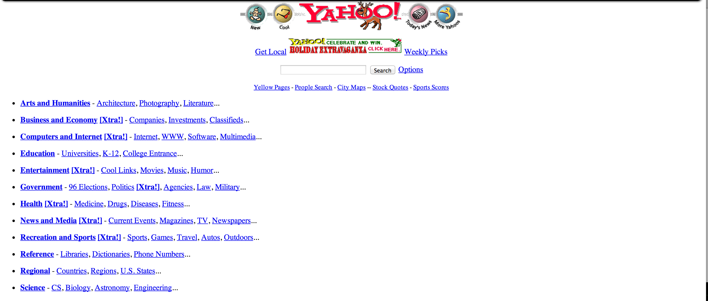
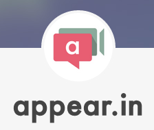

WebRTC
Web Real Time Communication without Plugins or Tears
@danni749
HTTP (Pre-ajax)

A Gap in the Web Platform
Opportunities
- Remote office
- Co-working service
- Video conferencing
- Tele-education
- Healthcare/Tele-medicine
- Customer Service
- Telemetry
- etc.
- Obtain user media: getUserMedia
- Communicate with other browsers: RTCPeerConnection
- Communicate data: RTCDataChannel
Applications
